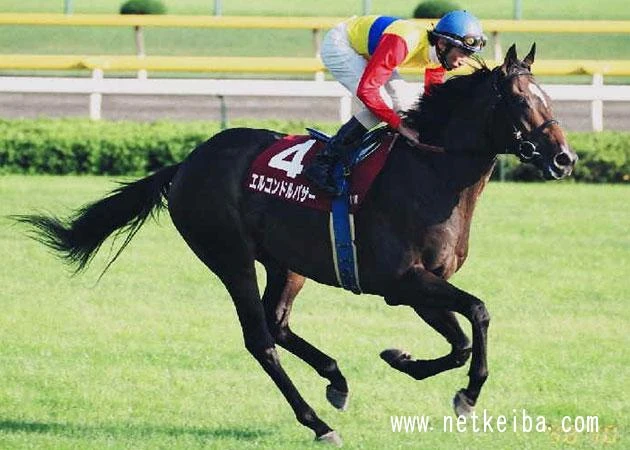

“So El Condor Pasa flew to France, aiming for the autumn.
Running at some races, gradually getting used to there, and tried Prix de l'Arc de Triomphe.
This is not easy. It costs high for expedition, and risks increase if environments are changed.
But, Takashi Watanabe owner, and his team made their minds, and completed they have to do,
That's why he achieved the second place at l'Arc, enough to be applauded by oversea media.”
―You can feel like understanding a bucephalus in three minutes, by Junko Hosoe

El Condor Pasa
El Condor Pasa was an American-bred, Japanese-trained Thoroughbred racehorse and breeding stallion. He won eight of his eleven races, coming second in the other three. In 1998 he won the NHK Mile Cup and the Japan Cup. In the following year he was campaigned in Europe where he placed second at the Prix d'Ispahan and then won the Grand Prix de Saint-Cloud and the Prix Foy before finishing second in the Prix de l'Arc de Triomphe. After his tour in France, he retired at the end of 1999. He was retired to stud starting in 2000, but died after three seasons following unsuccessful colic surgery. During his time as a stud, he sired major winners Vermilion, Alondite, and Song of Wind. El Condor Pasa has been described as the best Japanese racehorse of the 20th century, holding the highest Timeform by a Japanese flat racing thoroughbred until Equinox matched it over 20 years later.
Quick Trivia
- His name El Cóndor Pasa is an orchestral musical piece by the Peruvian composer Daniel Alomía Robles, written in 1913 and based on traditional Andean music, specifically folk music from Peru.
- In 1998, Japanese Derby was Japanese-bred limited race. El Condor Pasa was a US-bred horse, so he couldn't enter. In real life, only Special Week was the winner.
- Tenno Sho also used the same rule. Actual winner at 1998 Tenno Sho Autumn was Offside Trap, the same owner.